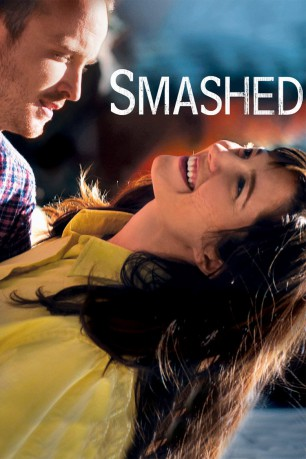

#4718 Smashed
 
 IMDB-Wertung: 6.8 / 10
IMDB-Wertung: 6.8 / 10  Tomatometer: 83
Tomatometer: 83  Metascore: 0
Metascore: 0 
Grundschullehrerin Kate Hannah (Mary Elizabeth Winstead) und Songschreiber Charlie (Aaron Paul) sind verheiratet, jung und ausgelassen. Gerne feiern sie wilde Partys mit viel Alkohol und fangen auch im Alltag schon morgens mit dem Trinken an. Doch eines Tages muss sich Kate vor den Augen ihrer Schülerinnen und Schüler übergeben und erregt somit die Aufmerksamkeit der Schulleiterin (Megan Mullally). Der stellvertretende Schulleiter Dave (Nick Offerman), der selbst trockener Alkoholiker ist, rät Kate, den Entzug mit Hilfe einer Selbsthilfegruppe zu versuchen. Für die junge Frau scheint es insgesamt bergauf zu gehen, doch ihr Verhältnis zu ihrem Mann Charlie verschlechtert sich, da dieser sein Trinkverhalten nicht verändert. Kate bittet ihren Mann auch dem Alkohol abzuschwören und muss sich außerdem mit einigen Problemen beschäftigen, die sie betrunken beiseite geschoben hatte.
Jahr: 2012
Dauer: 81 Minuten
FSK: 12
Land: USA Studio: Sony Pictures ClassicsTonspuren:
Untertitel: Deutsch,
Auflösung: 720p (1280x688) Größe: 1925 MB
Genre: Drama
Regisseur: James Ponsoldt
Drehbuch: James Napier Robertson
Soundtrack:
Darsteller:
 Mary Elizabeth Winstead als Kate Hannah
Mary Elizabeth Winstead als Kate Hannah Aaron Paul als Charlie Hannah
Aaron Paul als Charlie Hannah Nick Offerman als Dave Davies
Nick Offerman als Dave Davies Megan Mullally als Principal Barnes
Megan Mullally als Principal Barnes Octavia Spencer als Jenny
Octavia Spencer als Jenny Mary Kay Place als Rochelle
Mary Kay Place als Rochelle Kyle Gallner als Owen Hannah
Kyle Gallner als Owen Hannah Mackenzie Davis als Millie
Mackenzie Davis als Millie Bree Turner als Freda
Bree Turner als Freda Brad Carter als Felix
Brad Carter als Felix- Barrett Shuler als Greg
 Rene Rivera als Rico
Rene Rivera als Rico Richmond Arquette als Arlo
Richmond Arquette als Arlo- David Grammer als Junior
- Ron Lynch als Chuck
- Elise Salomon als Tina
- Aileen Davila als Hillary
- Haley Brooke Walker als Isabel
- Lisa Yamada als Angela
- Carol Avery als Lily , uncredited
- Susan Burke als Cora , uncredited
- Danilo Di Julio als Jimmy , uncredited
- Natalie Dreyfuss als Amber , uncredited
- Kelly Ebsary als Shana , uncredited
- Anjini Taneja Azhar als Winnie
- Silas Agape Garcia als Ramon
- Wilson Schwartz als Toby
- Murray Gershenz als Ted
- Jane Noltemeyer als Susan
- Brian C. Haynes als DJ Supa Crispy
- Marc Abbink als Bar Patron , uncredited
- Patti Allison als Rocky , uncredited
- Gabriel Aslan als Classroom Student , uncredited
Datei: X:\2012(N-Z)\Smashed (2012, FSK12, 1280x688).mkv seit 08.11.2016
Festplatte: HD 2012(N-Z)-2013(A-H)
 Es gibt insgesamt 138 Filme in der Gruppe '2012(N-Z)'
Es gibt insgesamt 138 Filme in der Gruppe '2012(N-Z)'